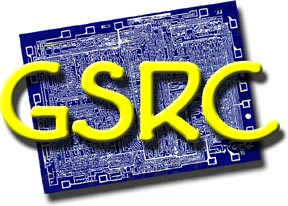

|
 |
The Ptolemy group participated in the Gigascale Silicon Research
Center (GSRC), which is funded in part by the
Microelectronics Advanced Research Corporation (MARCO)
Edward A. Lee was one of the initial principal investigators. |
http://www.gigascale.org